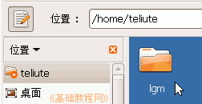
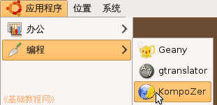
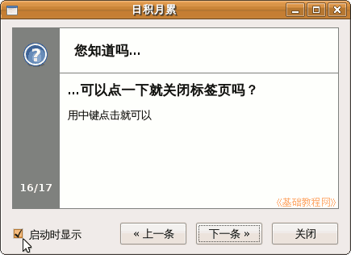
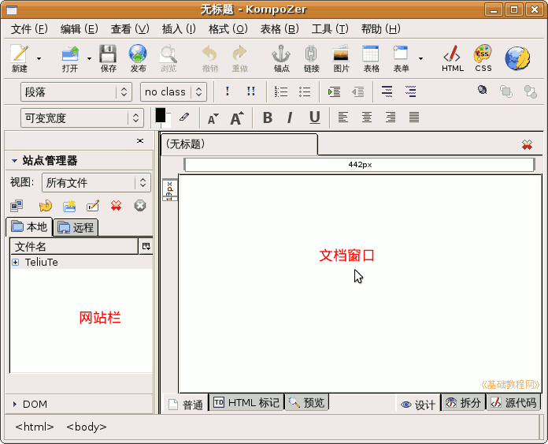
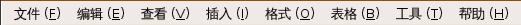
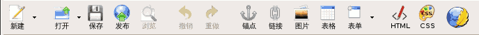
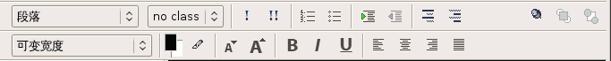

KompoZer 操作基础教程
作者：Teliute 来源：基础教程网
基础2 - 运行程序 返回目录 下一课KompoZer是一个免费的网站制作软件，使用它可以很方便地制作网页，下面我们来认识一下它的窗口；
1、新建文件夹
在主文件夹里给自己新建一个文件夹，文件名用自己名字的拼音字母，数量小于8个，以后自己的网页都存这里头

其他文件夹也可以，要求基本是名称是英文，尽量不要用空格汉字等那些非标准字符；
2、启动 KompoZer
1）点左上角菜单“ 应用程序－编程－KompoZer”，就可以启动KompoZer程序；

2）启动后会出来一个“日积月累”小面板，去掉左下角的勾，然后点关闭即可，以后还可以点菜单“帮助－日积月累“找出来；

3、KompoZer窗口
1）启动成功后，出来一个窗口，窗口分两栏，左边是网站栏， 右边是文档窗口；

2）窗口的上面有菜单栏，记住常用的文件、编辑和格式菜单；

3）再下面是常用工具栏，里面有常用的命令按钮，记住保存和浏览；

4）再下面是格式工具栏，对文字进行分段、字体、字号、颜色、对齐等；

练习：看一下KompoZer窗口，说出它的各个组成部分的名称；
本节学习了KompoZer的启动和窗口的基本知识，如果你成功地完成了练习，请继续学习下一课内容；
本教程由86团学校TeliuTe制作|著作权所有
基础教程网：http://teliute.org/
美丽的校园……
转载和引用本站内容，请保留版权信息和本站链接。